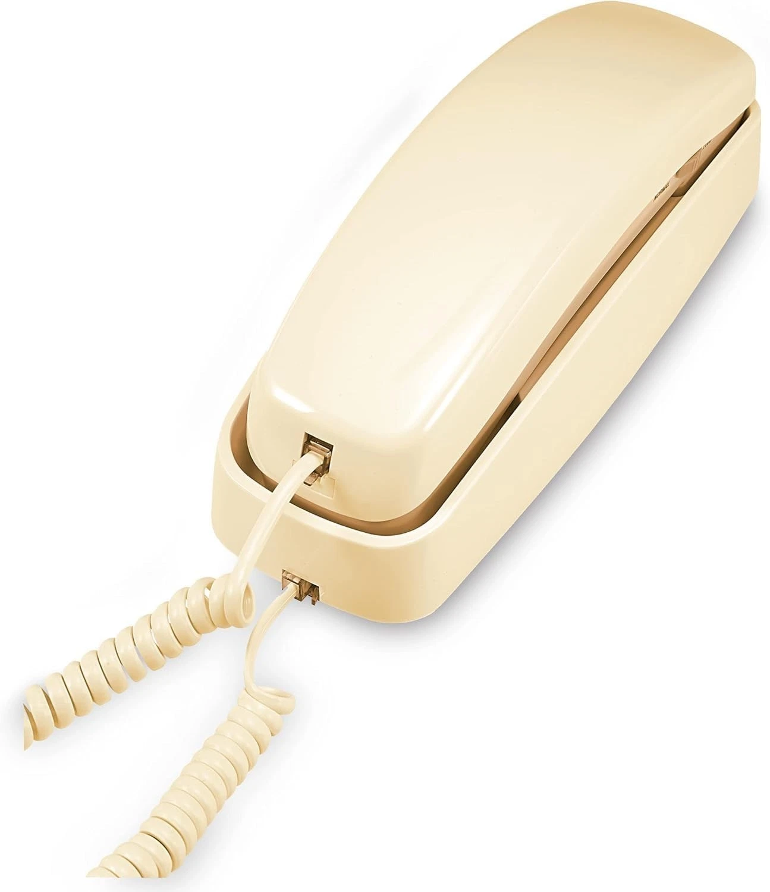
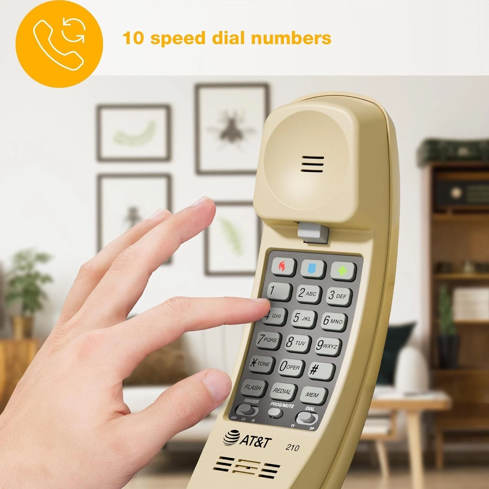

This project lets you create a normal house phone for your kids using a regular phone, a small adapter box, and a cheap internet phone provider.
It feels like a traditional landline, but instead of using the telephone company it uses your home internet.


A basic corded house phone gives kids a familiar handset and big physical buttons.
The OBi200 replaces the old phone company line and gives your phone dial tone.
Your calls travel through your home internet and ring a cell phone or family member anywhere.
The OBi200 acts like the phone company. It powers the phone and converts the call into internet data.
Type the IP address into a browser.
Enter:
Save the settings.
Call your cell phone. Then call the house phone number to make sure it rings.
| Item | Typical Cost |
|---|---|
| Old slimline phone | $10 - $30 |
| OBi200 adapter | $25 - $60 |
| VoIP.ms account funding | $10 starting credit |
| Total to get started | About $45 - $100 |
| Item | Typical Cost |
|---|---|
| VoIP.ms phone number | About $1 per month |
| Light calling usage | About $1 - $3 per month |
| Ongoing total | Usually $2 - $4 per month |
Add speed dial buttons so kids can easily call family.
You can also tape a small contact card next to the phone.
Yes by default. You can limit dialing or only use speed dial buttons.
Who powers the phone?The OBi200 supplies the phone-line power just like a traditional landline.
Is this difficult to set up?Most people can set it up in about 20-30 minutes.
These are example listings for old corded phones and speed-dial phones that fit this project. Listings and prices change over time.
A corded phone with speed-dial buttons for kids to reach regular contacts fast.
A second old-school AT&T phone listing to compare style and price.